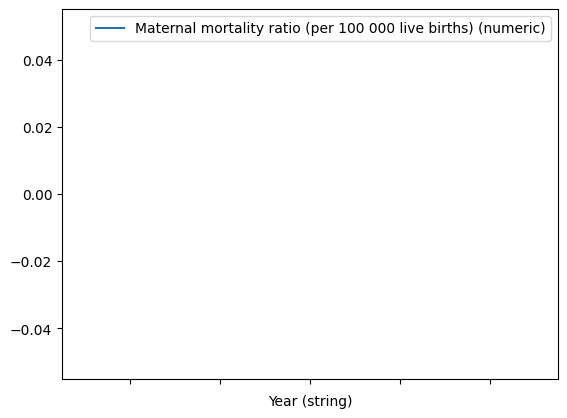
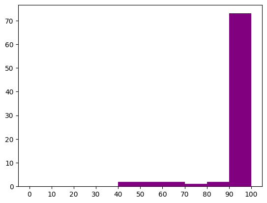
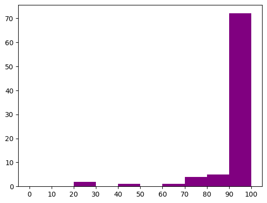
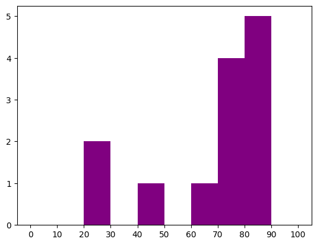
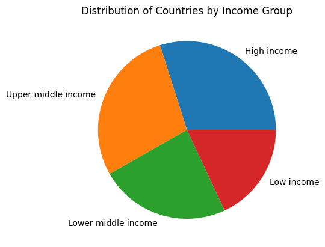

import pandas as pdWHOdata = pd.read_csv('/home/jovyan/DH140FinalProject/WHOdata.csv',encoding='latin-1')WHOdata.head()| PUBLISH STATES (string) | Year (string) | WHO region (string) | Country (string) | Births attended by skilled health personnel (%) (string) | Births attended by skilled health personnel (%) (numeric) | Births attended by skilled health personnel (%) (comment) | Maternal mortality ratio (per 100 000 live births) (string) | Maternal mortality ratio (per 100 000 live births) (numeric) | Maternal mortality ratio (per 100 000 live births) (low) | Maternal mortality ratio (per 100 000 live births) (high) | Maternal mortality ratio (per 100 000 live births) (comment) | |
|---|---|---|---|---|---|---|---|---|---|---|---|---|
| 0 | Published | 2000 | Africa | Algeria | NaN | NaN | NaN | 161 [ 115 - 225 ] | 161.0 | 115.0 | 225.0 | NaN |
| 1 | Published | 2000 | Africa | Angola | NaN | NaN | NaN | 827 [ 576 - 1 180 ] | 827.0 | 576.0 | 1180.0 | NaN |
| 2 | Published | 2000 | Africa | Benin | NaN | NaN | NaN | 520 [ 427 - 633 ] | 520.0 | 427.0 | 633.0 | NaN |
| 3 | Published | 2000 | Africa | Botswana | 98.5 | 98.5 | Cadres included align with the standard defini... | 262 [ 227 - 298 ] | 262.0 | 227.0 | 298.0 | NaN |
| 4 | Published | 2000 | Africa | Burkina Faso | NaN | NaN | NaN | 516 [ 415 - 638 ] | 516.0 | 415.0 | 638.0 | NaN |
WHOdata.tail()| PUBLISH STATES (string) | Year (string) | WHO region (string) | Country (string) | Births attended by skilled health personnel (%) (string) | Births attended by skilled health personnel (%) (numeric) | Births attended by skilled health personnel (%) (comment) | Maternal mortality ratio (per 100 000 live births) (string) | Maternal mortality ratio (per 100 000 live births) (numeric) | Maternal mortality ratio (per 100 000 live births) (low) | Maternal mortality ratio (per 100 000 live births) (high) | Maternal mortality ratio (per 100 000 live births) (comment) | |
|---|---|---|---|---|---|---|---|---|---|---|---|---|
| 3690 | Published | 2001-2003 | Europe | Luxembourg | 99.9 | 99.9 | Institutional Birth (IB): includes all deliver... | NaN | NaN | NaN | NaN | NaN |
| 3691 | Published | 2021 | Africa | Niger | 43.6 | 43.6 | Definition includes other cadres that is not i... | NaN | NaN | NaN | NaN | NaN |
| 3692 | Published | 2021 | Western Pacific | Fiji | 99.8 | 99.8 | Unclear definition of the cadres included. Fij... | NaN | NaN | NaN | NaN | NaN |
| 3693 | Published | 2019-2021 | South-East Asia | India | 89.4 | 89.4 | Definition includes other cadres that is not i... | NaN | NaN | NaN | NaN | NaN |
| 3694 | Published | 2020-2021 | Western Pacific | Viet Nam | 96.1 | 96.1 | Unclear definition of the cadres included. Vie... | NaN | NaN | NaN | NaN | NaN |
US = WHOdata.loc[WHOdata['Country (string)']=='United States']US.plot(x='Year (string)', y='Maternal mortality ratio (per 100 000 live births) (numeric)')<AxesSubplot: xlabel='Year (string)'>
WHOdata_2018 = WHOdata.loc[WHOdata['Year (string)']=='2018']
import matplotlib.pyplot as plt
bins = [0, 10, 20, 30, 40, 50, 60, 70, 80, 90, 100]
labels = ['0-10', '10-20', '20-30', '30-40', '40-50', '50-60', '60-70', '70-80', '80-90', '90-100'] # Updated labels list
plt.hist(WHOdata_2018['Births attended by skilled health personnel (%) (numeric)'], bins=bins, color='purple')
plt.xticks(bins, labels)
plt.xlabel('Births attended by skilled personnel')
plt.ylabel('Count')
plt.show()ValueError: The number of FixedLocator locations (11), usually from a call to set_ticks, does not match the number of ticklabels (10).
WHOdata_2002 = WHOdata.loc[WHOdata['Year (string)']=='2002']
import matplotlib.pyplot as plt
bins = [0, 10, 20, 30, 40, 50, 60, 70, 80, 90, 100]
labels = ['0-10', '10-20', '20-30', '30-40', '40-50', '50-60', '60-70', '70-80', '80-90', '90-100'] # Updated labels list
plt.hist(WHOdata_2002['Births attended by skilled health personnel (%) (numeric)'], bins=bins, color='purple')
plt.xticks(bins, labels)
plt.xlabel('Births attended by skilled personnel')
plt.ylabel('Count')
plt.show()ValueError: The number of FixedLocator locations (11), usually from a call to set_ticks, does not match the number of ticklabels (10).
WHOdata_2002 = WHOdata.loc[WHOdata['Year (string)']=='2002']
lower_WHOdata_2002 = WHOdata_2002.loc[WHOdata_2002['Births attended by skilled health personnel (%) (numeric)']<=90]
import matplotlib.pyplot as plt
bins = [0, 10, 20, 30, 40, 50, 60, 70, 80, 90, 100]
labels = ['0-10', '10-20', '20-30', '30-40', '40-50', '50-60', '60-70', '70-80', '80-90', '90-100'] # Updated labels list
plt.hist(lower_WHOdata_2002['Births attended by skilled health personnel (%) (numeric)'], bins=bins, color='purple')
plt.xticks(bins, labels)
plt.xlabel('Births attended by skilled personnel')
plt.ylabel('Count')
plt.show()ValueError: The number of FixedLocator locations (11), usually from a call to set_ticks, does not match the number of ticklabels (10).
WorldBank = pd.read_csv('/home/jovyan/DH140FinalProject/WorldBankIncome.csv',encoding='latin-1')WorldBank.head()| Code | DisplayValue | URL | DS | FIPS | IOC | ISO2 | ISO | ITU | MARC | ... | LANGUAGES_EN_2012 | WHO_REGION | WHO_REGION_CODE | World Bank income group | World Bank income group code | SHORTNAMEES | SHORTNAMEFR | WHOLEGALSTATUS | World Bank income group GNI reference year | World Bank income group release date | |
|---|---|---|---|---|---|---|---|---|---|---|---|---|---|---|---|---|---|---|---|---|---|
| 0 | AFG | Afghanistan | NaN | AFG | AF | AFG | AF | AFG | AFG | af | ... | Dari, Pashto, Turkic languages, 30 minor langu... | Eastern Mediterranean | EMR | Low income | WB_LI | Afganistan | Afghanistan | M | 2017 | 2018 |
| 1 | ALB | Albania | NaN | AL | AL | ALB | AL | ALB | ALB | aa | ... | Albanian, Greek, Vlach, Romani, Slavic dialects | Europe | EUR | Upper middle income | WB_UMI | Albania | Albanie | M | 2017 | 2018 |
| 2 | DZA | Algeria | NaN | DZ | AG | ALG | DZ | DZA | ALG | ae | ... | Arabic, French, Berber dialects | Africa | AFR | Upper middle income | WB_UMI | Argelia | Algrie | M | 2017 | 2018 |
| 3 | AND | Andorra | NaN | AND | AN | AND | AD | AND | AND | an | ... | Catalan, French, Castilian, Portuguese | Europe | EUR | High income | WB_HI | Andorra | Andorre | M | 2017 | 2018 |
| 4 | AGO | Angola | NaN | NaN | AO | ANG | AO | AGO | AGL | ao | ... | Portuguese, Bantu, other African languages | Africa | AFR | Lower middle income | WB_LMI | Angola | Angola | M | 2017 | 2018 |
5 rows × 25 columns
WorldBank.tail()| Code | DisplayValue | URL | DS | FIPS | IOC | ISO2 | ISO | ITU | MARC | ... | LANGUAGES_EN_2012 | WHO_REGION | WHO_REGION_CODE | World Bank income group | World Bank income group code | SHORTNAMEES | SHORTNAMEFR | WHOLEGALSTATUS | World Bank income group GNI reference year | World Bank income group release date | |
|---|---|---|---|---|---|---|---|---|---|---|---|---|---|---|---|---|---|---|---|---|---|
| 189 | ZWE | Zimbabwe | NaN | ZW | ZI | ZIM | ZW | ZWE | ZWE | rh | ... | English, Shona, Sindebele, numerous tribal dia... | Africa | AFR | Low income | WB_LI | Zimbabwe | Zimbabwe | M | 2017 | 2018 |
| 190 | MNE | Montenegro | NaN | NaN | NaN | NaN | NaN | MNE | NaN | NaN | ... | Serbian, Montenegrin, Bosnian, Albanian, others | Europe | EUR | Upper middle income | WB_UMI | Montenegro | Montngro | M | 2017 | 2018 |
| 191 | PRI | Puerto Rico | NaN | NaN | NaN | NaN | NaN | PRI | NaN | NaN | ... | NaN | NaN | NaN | High income | WB_HI | NaN | NaN | A | 2017 | 2018 |
| 192 | PSE | occupied Palestinian territory, including east... | NaN | PSE | NaN | PSE | NaN | PSE | PSE | NaN | ... | Arabic | Eastern Mediterranean | EMR | Lower middle income | WB_LMI | occupied Palestinian territory | occupied Palestinian territory | NaN | 2017 | 2018 |
| 193 | SSD | South Sudan | NaN | NaN | NaN | NaN | NaN | SSD | NaN | NaN | ... | NaN | Africa | AFR | Low income | WB_LI | Sudan del Sur | Soudan du Sud | M | 2017 | 2018 |
5 rows × 25 columns
count_low_income = 0
for index, row in WorldBank.iterrows():
if row['World Bank income group'] == 'Low income':
count_low_income += 1
print(f'The number of countries with low income is {count_low_income}')The number of countries with low income is 34count_uppermiddle_income = 0
for index, row in WorldBank.iterrows():
if row['World Bank income group'] == 'Upper middle income':
count_uppermiddle_income += 1
print(f'The number of countries with upper middle income is {count_uppermiddle_income}')The number of countries with upper middle income is 55count_high_income = 0
for index, row in WorldBank.iterrows():
if row['World Bank income group'] == 'High income':
count_high_income += 1
print(f'The number of countries with high income is {count_high_income}')The number of countries with high income is 57count_lowermiddle_income = 0
for index, row in WorldBank.iterrows():
if row['World Bank income group'] == 'Lower middle income':
count_lowermiddle_income += 1
print(f'The number of countries with lower middle income is {count_lowermiddle_income}')The number of countries with lower middle income is 46import matplotlib.pyplot as plt
WorldBank['World Bank income group'].replace(['Low-income', 'Low Income'], 'Low income', inplace=True)
WorldBank['World Bank income group'].replace(['High-income', 'High Income'], 'High income', inplace=True)
income_counts = WorldBank['World Bank income group'].value_counts()
plt.pie(income_counts, labels=income_counts.index)
plt.title('Distribution of Countries by Income Group')
plt.show()